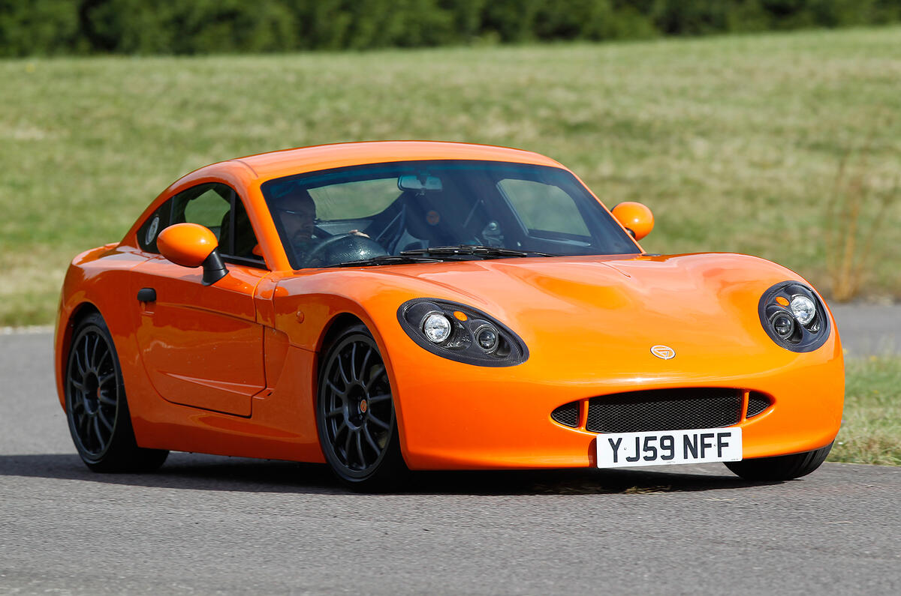

Sobre nós

O British Motorsport nasceu como uma homenagem ao site - já fechado - Speedhunters, servindo de inspiração para a criação de um espaço com identidade própria e propósito distinto. Nosso objetivo é compartilhar a paixão pela cultura automotiva britânica em toda a sua diversidade e riqueza.
Aqui, buscamos ir além do óbvio: exploramos modelos raros e pouco conhecidos, destacamos carros de competição e suas inovações tecnológicas, e mergulhamos no contexto cultural que envolve o automobilismo no Reino Unido e em outros países ligados a essa tradição. Nosso compromisso é oferecer uma visão autêntica, informativa e inspiradora para entusiastas e curiosos do universo automotivo.
Caterham Factory Tour
Tour oferecido pela Caterham por sua fábrica
Nossos Produtos

- Caterham Seven
- Lotus Europa
- Ginetta G20
- MG B
- Mini Cooper S
- Morgan Plus Four
- TVR Cerbera